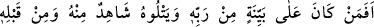
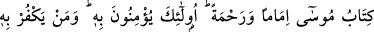
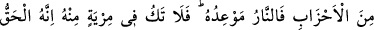
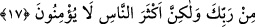

kâimdir. Bu yönü ile de bâtıldır.
Ârif, irfânının başında kurb (yakınlık) makamlarına ulaştığı zaman genellikle bu kâinât
gözünde yok olur. Hakk’ı müşâhede sebebiyle onları müşâhededen mahcûb
(perdelenmiş) olur. Çünkü o varlıktan tamamen fânî olmuştur. İrfanı kemâle erdiğinde
ise aynı anda Hakk’ı ve halkı (yaratılanları) berâber müşâhede eder. Ama bu makama
herkes ulaşamaz. Çünkü insanların çoğu halkı müşâhede etse Hakk’ı müşâhede edemez,
Hakk’ı müşâhede etse halkı müşâhede edemez. Vahdeti, ancak iki zıt şeyin bir arada
bulunduğunu idrâk edebilen kavrayabilir. Herhalde Üstad Şeyh Ebü’l-Hasen Bekrî’nin
(k.s.) şu sözü birinci müşâhededendir:
“Allah dışındaki her şeyden (mâsivâ) Allah’a istiğfar ediyor, beni bağışlamasını
istiyorum.” Çünkü bâtıl (olan mâsivâ) kendi zâtına varlık isbat etmekten istiğfar eder.
İnsânü’l-uyûn fî sîreti’l-Emîni’l-Me’mûn’da böyle geçmektedir.
Şeyh Mağribî şöyle der:
Gölge varlık iddia eder/gösterir, fakat aslında yoktur.
Yokluğu varlıktan bilir tanırsan kurtulursun.
Yine o şöyle der:
Uykudan uyan ki bunların hepsi hayâlâttır
Uyanık gözün (ehlüllâhın) nazarında bu dünya uyku gibidir
Allah Teâlâ’dan, maksudumuzun yüzünden peçeyi kaldırmasını, her mazhar ve
mevcûdun yüzünde bize tecellî etmesini niyâz ederiz. O Rahîm (çok merhametli), Vedûd
(çok seven), ihsan, feyiz ve cömertlik sâhibidir.
17. Rabb’i tarafından (gelmiş) açık bir delile dayanan ve onu Rabb’inden bir
şahidin izlediği, ayrıca kendisinden önce bir önder ve bir rahmet olarak Musa’nın
Kitab’ı (elinde) bulunan kimse (inkârcılar gibi) midir? İşte onlar ona (Kur’an’a)
îmân ederler. Zümrelerden hangisi onu inkâr ederse işte cehennem ateşi onun
varacağı yerdir. Bundan şüphen olmasın; zira bu, senin Rabb’in tarafından
bildirilmiş gerçektir; fakat insanların çoğu inanmazlar.